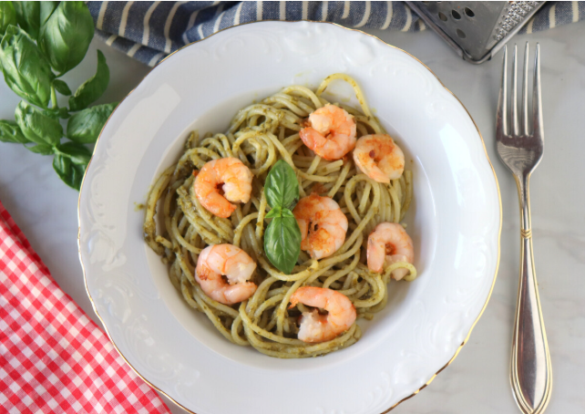

Recipe 5

Description
This is the second recipe. It is delicious and easy to make!
Ingredients:
- camarones 250 g
- Pasta integral
- aceite de oliva
- sal a gusto
Instructions
- Cook the whole wheat pasta according to the package instructions until al dente. Drain and set aside.
- In a large skillet, heat the olive oil over medium heat.
- Add the shrimp and cook until they turn pink and are cooked through, about 2-3 minutes per side.
- Season with salt to taste.
- Toss the cooked pasta with the shrimp in the skillet until well combined and heated through.
Back to Home